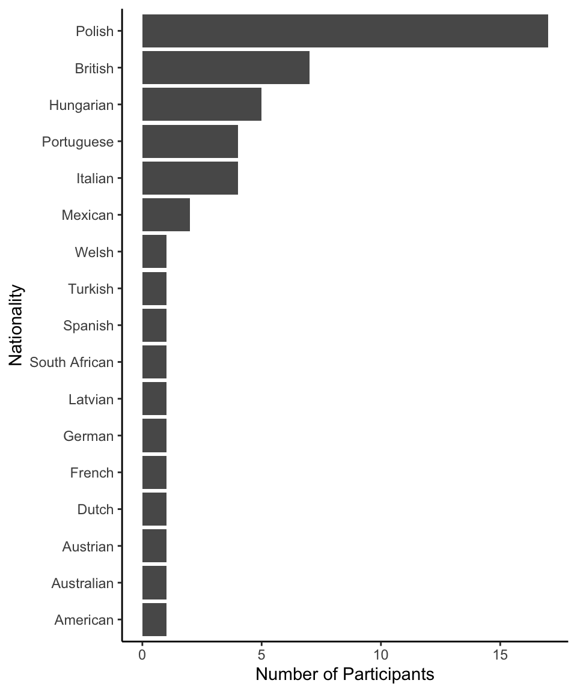

Code
# load libraries
library(tidyverse)
library(patchwork)
# set the theme for all ggplot2 figures
theme_set(theme_classic() +
theme(legend.position = "top",
legend.direction = "horizontal"))Zhang Chen ![]()
# load libraries
library(tidyverse)
library(patchwork)
# set the theme for all ggplot2 figures
theme_set(theme_classic() +
theme(legend.position = "top",
legend.direction = "horizontal"))# load the main data files
df_main <-
list.files("../../../data/raw/", pattern = "main", full.names = TRUE) %>%
map_dfr(~read_csv(.x, col_types = cols(.default = col_character())))# demographics
df_demo <- df_main %>%
group_by(subject_ID) %>%
sample_n(1) %>%
filter(subject_ID != "subject_ID") %>%
ungroup()
# do some data cleaning
df_demo <- df_demo %>%
mutate(
age = as.numeric(age),
nationality = str_to_title(nationality),
nationality = recode(nationality, "Italy" = "Italian",
"Poland" = "Polish", "Austria" = "Austrian",
"Hungary" = "Hungarian", "Portugal" = "Portuguese")
)
# compute gender and age statistics
n_total <- nrow(df_demo)
n_male <- sum(df_demo$gender == "male")
n_female <- sum(df_demo$gender == "female")
M_age <- round(mean(df_demo$age), 1)
SD_age <- round(sd(df_demo$age), 1)In total, 50 participants (34 males, 16 females; Mage = 27.7; SDage = 5.5) took part in the experiment via Prolific.co on Nov 4th, 2022. Another three participants initially signed up for the experiment but then returned. One participant was timed out. No data was recorded for the latter 4 participants. Eligibility criteria included:
Between 18 and 55 years old;
Having an approval rate of at least 85%;
Having English as one of the fluent languages;
Reporting no color blindness.
Figure 1 shows the distribution of the self-reported nationalities of all participants.
# nationality distribution
df_demo %>%
group_by(nationality) %>%
mutate(n=n()) %>%
ggplot(aes(x = reorder(nationality, n))) +
geom_bar() +
labs(x = "Nationality", y = "Number of Participants") +
coord_flip()
# count the number of trials recorded for all participants
trials_count <- df_main %>% count(subject_ID)
# unique(trials_count$n)
# trials_count %>% count(n)
# exclude data from the participant (No. 9) who restarted
df_main <- df_main %>%
filter(!subject_ID %in% c("9", "subject_ID"))
# check trial count again
trials_count <- df_main %>% count(subject_ID)
# check if a certain trial had been recorded multiple times or not
# this has occurred, although infrequently, in previous experiments
unique_acount <- df_main %>%
mutate(
unique_trial = paste(subject_ID, exp_part,
block_number, trial_number, sep = "_")
) %>%
count(unique_trial)
# okay, not the case here. Okay to proceed.One participant restarted the experiment half way through Block 5. Data from this participant was excluded. Three participants had 107 trials, thus missing one trial. Data from these three participants were retained. All remaining participants had 108 trials recorded - the correct number of trials. This leaves us with 49 participants for further analysis.
# clean the main data frame
df_main <- df_main %>%
# select the experimental blocks
filter(exp_part == "exp") %>%
# some variables should be numeric values
mutate(
across(c(subject_ID, age, block_number, game1_startRT,
game1_respRT, game2_respRT), as.numeric),
across(game2_delay_premature:game2_LP_amount, as.numeric)
)
# compute some new variables
df_main <- df_main %>%
mutate(
# compute the expected values of each option
HP_EV = game2_HP_amount * game2_HP_prob,
LP_EV = game2_LP_amount * game2_LP_prob,
# determine which option has a higher expected value
high_EV_option = ifelse(HP_EV > LP_EV, "HP", "LP"),
# determine whether participants picked the high EV option
choose_high_EV = ifelse(game2_choice == high_EV_option, "yes", "no"),
# compute the EV ratio on each trial
EV_ratio = (HP_EV - LP_EV)/(HP_EV + LP_EV) * 2,
# use effect-coding for both categorical predictors
game1_outcome_num = ifelse(game1_outcome == "loss", 0.5, -0.5),
delay_num = ifelse(delay == "yes", 0.5, -0.5),
# the outcome variable: choose HP = 1, choose LP = 0
game2_choose_HP = ifelse(game2_choice == "HP", 1, 0)
)
# check the data type of all columns before proceeding
# str(df_main)
# check the number of trials again
trials_count <- df_main %>% count(subject_ID)Save the cleaned data for further analyses.
write_csv(df_main, "../../../data/processed/df_main_exp1.csv")